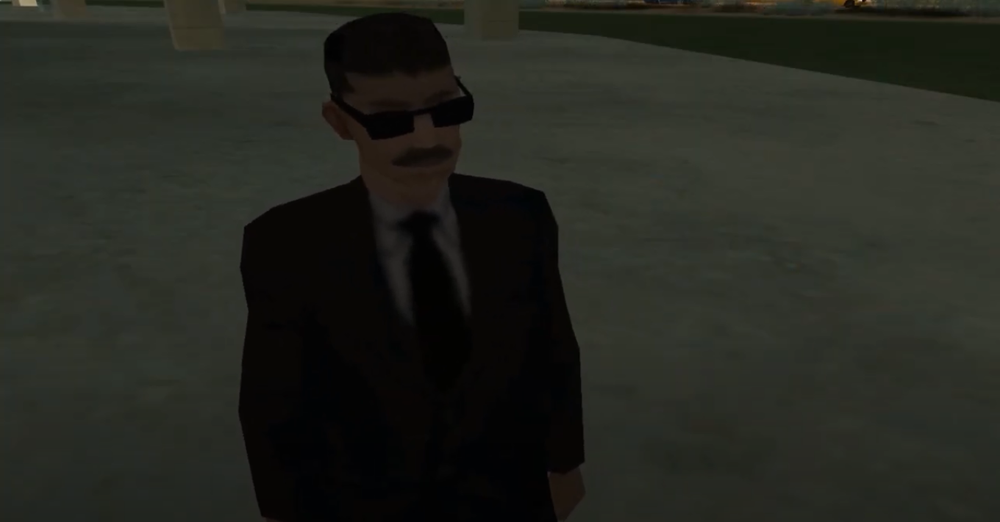
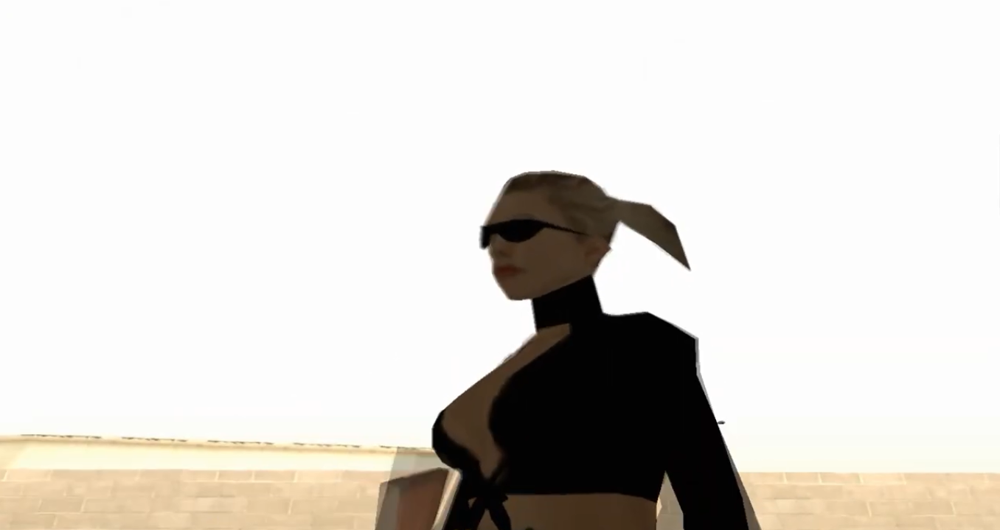

MIB
Claire
Uma das líderes da MIB. Ninguém sabe quem realmente ela é e de onde ela veio.
Dubladora: Thay Nick
Briar
Ele é um dos líderes da MIB e gosta de fazer experiências científicas. Ele aparenta ser calmo, mas não se engane!
Dublador: Leo Alves
Fausto
Um misterioso homem trajado como um trabalhador comum, mas que várias pessoas de medo.
Dubladores: Fábio Sablom e Pedroness
Basphas
Um dos líderes da MIB que ninguém sabe quem é. Dizem que ele está viajando por San Andreas a procura de algo.
Dublador: ?
Feistur
Um homem com uma máscara horrenda que trabalha na MIB. Ninguém sabe o que ele quer realmente, mas ele é o mais sensato e são entre os líderes da MIB.
Dublador: Mateus
Ahid
Um idoso que dizem que trabalha na MIB. As pessoas o veem se encontrando com o Feistur.
Dublador: Fernando
Henry
Um agente da MIB que leva tudo a sério e todos tem medo. Ele tem a ambição de ser o chefe algum dia, mas ele não parece saber o que está acontecendo no submundo de San Andreas.
Dublador: Keter Reis

Jones
O parceiro de missões do CJ e uma ovelha negra dentro da agência.
Dublador: Alessandro Zaharur

Loirinha da MIB
Uma agente da MIB que faz tudo o que os chefes pedem e acaba sempre se dando mal de alguma forma. Como ela está viva até hoje?
Dubladora: Loquendo
Cowboy do Mal
Ele é um personagem misterioso que vive em uma cidade pacata do deserto de San Andreas. Dizem que ele trabalha na MIB. Será que isso é verdade?
Dublador: Alessandro Zaharur
Chefe da MIB
Um fantoche que o governo colocou dentro da MIB para haver paz entre as instituições. Porém, algo está acontecendo dentro da agência que pode não ser bom para ninguém.
Dublador: Gabriel